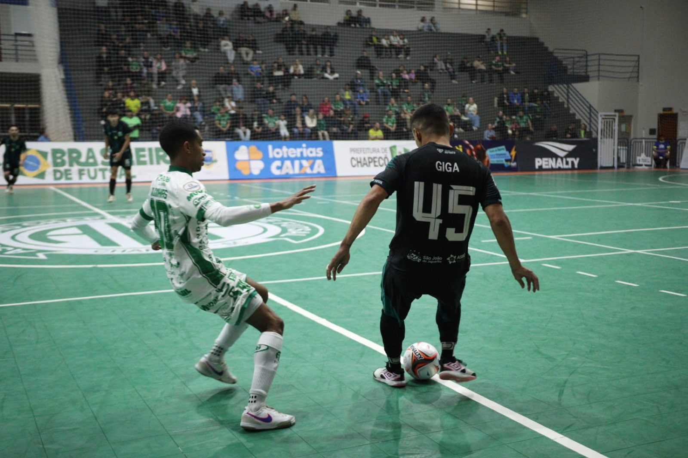
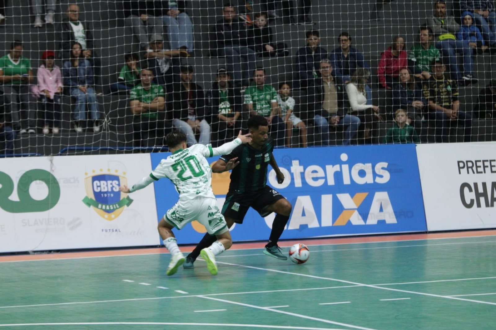

A equipe Prefeitura de Chapecó/Chapecoense/Unochapecó esteve em ação na noite desta sexta-feira (24), no ginásio do SESC Chapecó, que recebeu mais uma vez um grande público. O Verdão das Quadras lutou, mas sofreu a primeira derrota no Campeonato Brasileiro de Futsal 2026: 3 a 2 para o São João do Jaguaribe (CE).

No primeiro tempo, a Chape Futsal teve o domínio das ações do jogo e as principais oportunidades. Porém, aproveitou apenas uma das tantas chances criadas. Aos 13’32”, o pivô João Seco abriu o placar, desviando de cabeça um lançamento do goleiro Alê Falcone. Os cearenses tiveram presença ofensiva discreta, levando pouco perigo à meta verde-branca.
Após o intervalo, os anfitriões conseguiram ter posse de bola e construíram boas jogadas de ataque. O empate veio aos 4’45”, com Gigante. Os anfitriões responderam logo depois, aos 5’38”, com Samuka escorando passe para a rede. Entretanto, o Jaguaribe estava melhor na partida e virou, com Juninho, aos 7’45, e Joalison, aos 12’37”. Os donos da casa insistiram até o fim, inclusive com goleiro-linha, mas não evitaram a derrota.

Agora, a Chapecoense tem três pontos em dois jogos. O time do técnico Leonardo Schroeder volta a jogar pela competição nacional na próxima quinta-feira (30), às 19h30. Vai encarar o América-MG, em Matozinhos, cidade de Minas Gerais pela terceira rodada.
Crédito das fotos: @rogersilva_fotografia/@achapefutsal